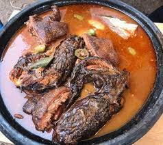

Fufu Recipe

Description
The image above describes fufu in its full glory after preparation.
Ingredients
- Corn dough
- Cassava dough
- Tilapia or Salmond
- Vegetables
- Shito
Steps
- Prepare a mixture of 2 corn dough is to 1 cassava dough
- Cook mix whiles stirring continuously with wooden laden
- Form the cooked mixture into round balls size of an adult fist
- Blend tomato, green pepper, garlic and ginger into a fine paste
- Cut onions, carrots and other vegetables into paste
- Grill tilapia or salmond
- Food is ready to be served